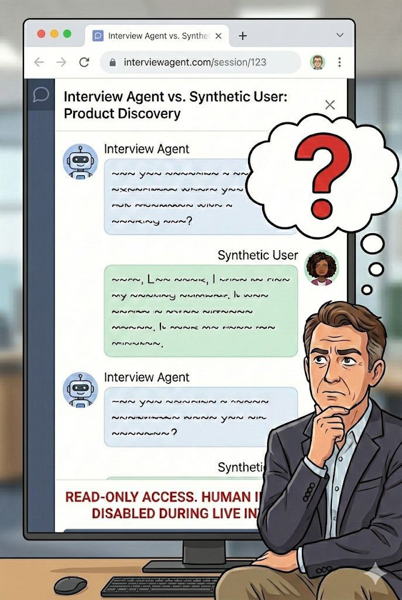
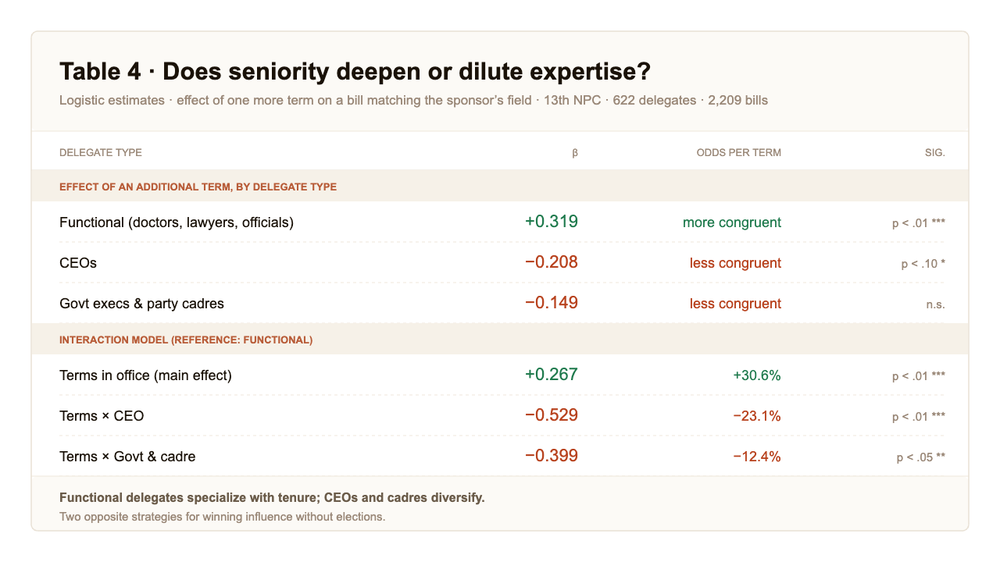

Six selected studies across three kinds of research, from product discovery to academic modeling.

A new product team at Anker had to ship the company's first health wearable with no prior user research. I led a mixed-methods study (10 in-depth interviews, ~300-person survey) that produced four user archetypes, a jobs-to-be-done map, and the v1 product roadmap.
Six months after launch in Malaysia, TikTok Shop's growth had plateaued, yet backend data showed creators were already driving 14% of purchases with zero investment. I designed a three-week, three-segment survey (n=2,500) that surfaced creators as an untapped commercial channel and seeded the first creator-partnership program.

The post-shopping survey stopped predicting buying behavior across five SEA markets; 20 think-aloud sessions diagnosed the UI breakdowns, and visual anchors, localized copy, and a per-market guide shipped in the next release.

I designed and ran a study evaluating how AI interview agents perform compared to human moderators, and whether synthetic users can substitute real participants in product discovery.

China's National People's Congress is often dismissed as a rubber stamp, yet its delegates freely choose which bills to sponsor. What does professional background predict about that choice? Across 622 delegates and 2,209 bills, functional delegates (doctors, lawyers, officials) increasingly sponsor bills in their own field as they gain seniority, while CEOs and party cadres drift beyond theirs. The finding shows two distinct strategies for winning influence without elections.
In high-poverty neighborhoods across NYC, LA, and Chicago, it was unclear whether a home's own attributes or its surrounding neighborhood resources better explained its price. Neighborhood attributes mattered most overall, with each city showing distinct preferences: Chicago favored single-family residential, LA weighted business atmosphere, and NYC discounted hospital proximity.